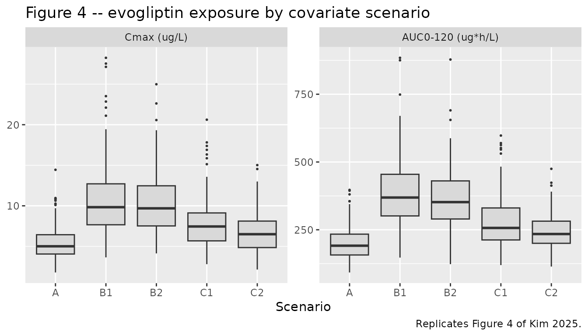
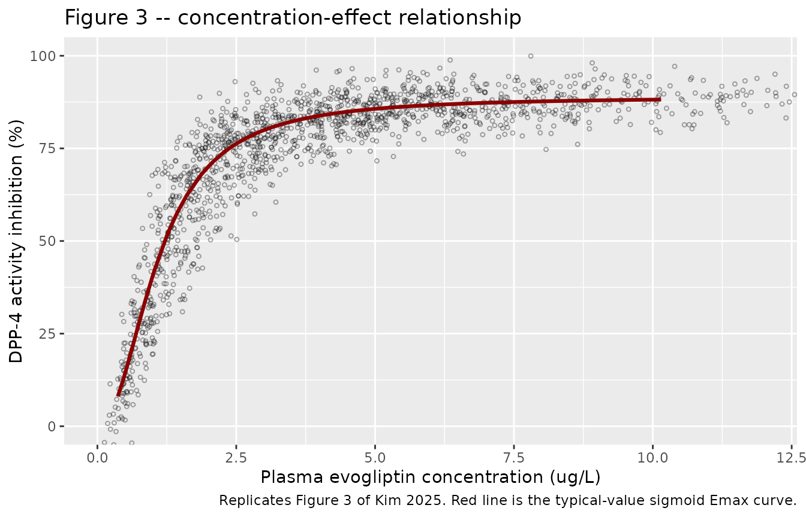

Model and source
- Citation: Kim B, Kim JE, Lee S, Oh J, Cho J-Y, Jang I-J, Lee S, Chung J-Y, Yoon S. Population pharmacokinetic and pharmacodynamic model of evogliptin: Severe uremia increases the bioavailability of evogliptin. CPT Pharmacometrics Syst Pharmacol. 2025;14(2):246-256. doi:10.1002/psp4.13263. Final NONMEM control streams for the PK and PD models are reproduced in Supporting Information (PSP4-14-246-s002.docx).
- Description: Population PK/PD model for evogliptin, a CYP3A4-metabolized dipeptidyl peptidase-4 (DPP-4) inhibitor, in adults spanning normal renal function through end-stage renal disease on hemodialysis (Kim 2025). Plasma evogliptin is described by a two-compartment model with first-order oral absorption, parameterized as apparent clearance CL/F, apparent central and peripheral volumes Vc/F and Vp/F, apparent inter-compartmental clearance Q/F, and absorption rate constant Ka. Body weight enters CL/F, Vc/F, Q/F, and Vp/F through fixed allometric exponents (0.75 on the clearances, 1 on the volumes) referenced to 65 kg. The only covariate effects retained after stepwise selection act on relative bioavailability F1, which is anchored to 1 at the healthy-subject median biochemistry (amylase 59.5 IU/L, triglyceride 112.5 mg/dL) and scaled by the power function F1 = (AMYL/59.5)^0.363 * (TRIG/112.5)^0.268. Both markers rise with worsening renal impairment, so the model expresses the paper’s central finding that uremia inhibits the first-pass metabolism of a CYP3A4 substrate and thereby raises its bioavailability. A direct-link sigmoid Emax model maps the model-predicted plasma concentration onto percent inhibition of blood DPP-4 activity with no effect-compartment delay, reflecting the absence of hysteresis in the observed concentration-effect data.
- Article: https://doi.org/10.1002/psp4.13263
- Supplement (study designs, demographics, stepwise selection, and the
final NONMEM control streams for both the PK and the PD model): https://doi.org/10.1002/psp4.13263 (Supporting
Information,
PSP4-14-246-s002.docx)
Evogliptin is a dipeptidyl peptidase-4 (DPP-4) inhibitor used as an antidiabetic drug. It is eliminated almost entirely by non-renal routes, predominantly CYP3A4-mediated metabolism. Kim 2025 asked whether uremia – the retention of uremic toxins that accompanies failing kidneys – changes the disposition of a CYP3A4 substrate, and found that it does, but through bioavailability rather than through clearance: the retained biochemical markers of uremia track a substantial inhibition of evogliptin’s first-pass metabolism.
Population
Data came from two phase I studies conducted at Seoul National University Hospital: DA1229_RI_I (NCT02214693), which enrolled patients with mild, moderate, and severe renal impairment alongside matched healthy subjects and sampled to 120 h, and DA1229_ESRD_I (NCT04195919), which enrolled patients with end-stage renal disease (ESRD) on hemodialysis alongside matched healthy subjects and sampled to 48 h. Every subject received a single oral 5 mg dose of evogliptin. ESRD patients were dosed both after (period 1) and before (period 2) a dialysis session; only period 1 data entered the model.
Forty-six subjects contributed 688 plasma evogliptin concentrations and 598 blood DPP-4 activity measurements. Cohort mean MDRD-eGFR spanned 100.2, 70.8, 50.5, 22.4, and 6.4 mL/min/1.73 m^2 for the healthy, mild, moderate, severe, and ESRD groups (supplement Table S3). Cohort mean weights ranged 60.8-69.8 kg and mean ages 45.6-59.1 years; the pooled cohort was 47% female (22 of the 47 enrolled) and entirely Korean.
The two biochemical markers that ended up in the model both move with renal function. Amylase, which is renally cleared, rises monotonically (cohort means 57.6 and 61.7 IU/L in the two healthy groups, 83.1, 96.8, 124.3 IU/L across mild, moderate, and severe impairment, and 145.4 IU/L in ESRD). Triglyceride rises with impairment (119.3, 124.5, 163.1, 191.4 mg/dL) but then falls back in dialysed ESRD patients (108.4 mg/dL) – and it is that non-monotonicity which drives the model’s prediction that dialysed patients have lower bioavailability than severe non-dialysed CKD patients.
The same information is available programmatically via the model’s
population metadata
(readModelDb("Kim_2025_evogliptin")()$population).
Source trace
Every ini() entry in
inst/modeldb/specificDrugs/Kim_2025_evogliptin.R carries an
in-file comment naming its origin. They are collected here for
review.
| Equation / parameter | Value | Source location |
|---|---|---|
lcl (CL/F) |
22.1 L/h | Table 1, “CL/F”; Results equation
CL/F = 22.1 * (WT/65)^0.75
|
lvc (Vc/F) |
829 L | Table 1, “Vc/F”; Results equation
Vc/F = 829 * (WT/65)
|
lka (Ka) |
1.26 /h | Table 1, “Ka” |
lq (Q/F) |
46.3 L/h | Table 1, “Q/F”; Results equation
Q/F = 46.3 * (WT/65)^0.75
|
lvp (Vp/F) |
465 L | Table 1, “Vp/F”; Results equation
Vp/F = 465 * (WT/65)
|
lfdepot (F1) |
1 (fixed) | Table 1, “F1” and footnote c; control stream
$THETA (1) FIX
|
e_wt_cl, e_wt_q
|
0.75 (fixed) | Table 1, “WT ~ CL/F”, “WT ~ Q/F” and footnote d |
e_wt_vc, e_wt_vp
|
1 (fixed) | Table 1, “WT ~ Vc/F”, “WT ~ Vp/F” and footnote d |
e_amyl_fdepot |
0.363 | Results equation
F1 = (Amyl/59.5)^0.363 * (TG/112.5)^0.268; Table 1 “Amyl ~
F1” rounds to 0.36 |
e_trig_fdepot |
0.268 | Results equation, as above; Table 1 “TG ~ F1” rounds to 0.27 |
| Reference amylase / triglyceride | 59.5 IU/L, 112.5 mg/dL | Results, “Final covariate model”; Table 1 footnote c |
| Reference weight | 65 kg | Results equations; control stream $PK
(WT/65)
|
etalcl, etalvc, etalka,
etalfdepot
|
20.2%, 25.0%, 76.8%, 25.4% | Table 1, “PK IIV” (see “The IIV scale” below) |
propSd |
0.111 | Table 1, “Proportional error (%)”; control stream
THETA(7), a standard deviation |
IIV model theta_i = theta_TV * exp(eta_i)
|
n/a | Methods, “Development of the base population PK model” |
lemax (Emax) |
88.9 %inhibition | Table 1, “Emax” |
lec50 (EC50) |
1.08 ug/L | Table 1, “EC50” |
lhill (gamma) |
2.14 | Table 1, “gamma (Hill coefficient)” |
etalec50 |
25.9% | Table 1, “PD IIV” |
addSd_DPP4INH |
4.087 %inhibition | Derived as sqrt(16.7) from Table 1, “Additive error”;
see Errata |
PD equation
Emax * C^gamma / (EC50^gamma + C^gamma)
|
n/a | Methods, “PD model of evogliptin”; control stream
$ERROR
|
| Two-compartment first-order absorption structure | n/a | Figure 1; control stream
$SUBROUTINES ADVAN4 TRANS4
|
The IIV scale
Kim 2025 states the IIV model as
theta_i = theta_TV * exp(eta_i) and then reports each omega
in Table 1 as a bare percentage (CL/F 20.2%, Vc/F 25.0%, Ka 76.8%, F1
25.4%, EC50 25.9%). A bare percentage against a log-normal random effect
is ambiguous: it may be the log-scale standard deviation
omega * 100, or the coefficient of variation
sqrt(exp(omega^2) - 1) * 100. The two readings diverge most
for Ka, where they imply omega of 0.768 versus 0.681.
The packaged model takes the SD reading
(etalcl ~ 0.202^2 and its siblings), which is the
prevailing convention when a popPK paper tabulates a log-normal IIV as a
bare percentage. It is worth being explicit that this is a convention
call and not a data-driven one: the two readings are scored against Kim
2025 Table 2 below (“Scoring the IIV scale against Table 2”) and the
paper’s own simulation cannot tell them apart. That is unsurprising once
the arithmetic is written out – at 20-25% the two readings differ in the
third decimal place of omega (0.202 versus 0.200 for CL/F),
and the one parameter where they genuinely diverge, Ka, has little
influence on the Cmax and AUC medians Table 2 reports. A user who needs
the CV% reading can rescale the omegas with ini(); the code
for doing so is in that section.
Two further details of Table 2 do have consequences and are reproduced here: its statistics were computed from simulated observations, so they include the 11.1% proportional residual error, and they were computed on the study’s discrete sampling schedule rather than a continuous grid. Both are checked against the paper in “Sampling grid and residual error” below.
Virtual cohort
Original observed data are not publicly available. The cohort below reproduces the five covariate scenarios of Kim 2025 Table 2: a healthy reference (A), two severe-uremia scenarios at CTCAE grade 2-3 thresholds (B1, B2), and two ESRD-on-hemodialysis scenarios (C1, C2). Body weight is fixed at 65 kg in every scenario, exactly as the paper specifies, so the only variability is the model’s own IIV plus residual error.
set.seed(20250813)
n_per_arm <- 200L
# Plasma PK sampling schedule of DA1229_RI_I (supplement Table S1). Table 2's
# Cmax and AUC0-120 were computed on this discrete grid, not a continuous one.
sched <- c(0, 1, 2, 3, 4, 5, 6, 8, 12, 24, 36, 48, 60, 72, 96, 120)
scenarios <- tibble::tribble(
~scenario, ~AMYL, ~TRIG, ~description,
"A", 59.5, 112.5, "Healthy reference (median amylase and TG)",
"B1", 200.0, 300.0, "Severe CKD, severe uremia (CTCAE grade 3 amylase, grade 2 TG)",
"B2", 150.0, 300.0, "Severe CKD, severe uremia (CTCAE grade 2 amylase and TG)",
"C1", 150.0, 112.5, "ESRD on hemodialysis (CTCAE grade 2 amylase)",
"C2", 100.0, 112.5, "ESRD on hemodialysis (CTCAE grade 1 amylase)"
)
# Build one arm as a self-contained event table. The model declares two
# endpoints, so every observation row must say which one it belongs to via
# `dvid` (1 = plasma evogliptin, 2 = DPP-4 inhibition); rxode2 rejects an
# observation row that leaves the endpoint unspecified. id_offset keeps subject
# IDs disjoint across arms; duplicate IDs would silently collapse in rxSolve.
make_arm <- function(label, amyl, trig, id_offset) {
ids <- seq_len(n_per_arm) + id_offset
dose <- data.frame(
id = ids, time = 0, amt = 5000, evid = 1L, # single oral 5 mg = 5000 ug
cmt = "depot", dvid = NA_integer_, endpoint = NA_character_
)
obs <- dplyr::bind_rows(
expand.grid(id = ids, time = sched, dvid = 1L),
expand.grid(id = ids, time = sched, dvid = 2L)
)
obs$amt <- NA_real_
obs$evid <- 0L
obs$cmt <- NA_character_
obs$endpoint <- c("Cc", "DPP4INH")[obs$dvid]
d <- dplyr::bind_rows(dose, obs)
d$WT <- 65
d$AMYL <- amyl
d$TRIG <- trig
d$scenario <- label
d[order(d$id, d$time), ]
}
events <- dplyr::bind_rows(lapply(
seq_len(nrow(scenarios)),
function(i) {
make_arm(
scenarios$scenario[i], scenarios$AMYL[i], scenarios$TRIG[i],
(i - 1L) * n_per_arm
)
}
))
stopifnot(length(unique(events$id)) == n_per_arm * nrow(scenarios))Simulation
mod <- readModelDb("Kim_2025_evogliptin")
set.seed(20250813)
# AMYL / TRIG are model covariates and are echoed by rxSolve automatically, so
# only the two bookkeeping columns need to be kept.
sim <- rxode2::rxSolve(mod, events = events, keep = c("scenario", "endpoint"))
#> ℹ parameter labels from comments will be replaced by 'label()'
# rxSolve can silently drop subjects; assert the count survived.
stopifnot(length(unique(sim$id)) == n_per_arm * nrow(scenarios))
sim <- as.data.frame(sim) |>
dplyr::mutate(scenario = factor(scenario, levels = scenarios$scenario))Because the model declares two endpoints, rxSolve()
returns the observations stacked: one row per (subject, time,
endpoint), with sim holding the simulated observation for
that row’s endpoint – concentration in ug/L on the Cc rows,
percent inhibition on the DPP4INH rows – and
ipredSim the matching individual prediction. The algebraic
quantities Cc and DPP4INH themselves are
individual predictions and are returned on every row regardless of
endpoint, so a DPP4INH row also carries the concurrent
predicted concentration. Neither Cc nor
DPP4INH carries residual error; only sim
does.
# Typical-value concentration-effect curve (IIV and residual error zeroed) on a
# dense time grid. One subject per scenario is enough because zeroing the random
# effects makes every subject in an arm identical; the five arms together trace
# the curve out to the highest concentration any scenario reaches.
mod_typical <- mod |> rxode2::zeroRe()
#> ℹ parameter labels from comments will be replaced by 'label()'
events_typical <- dplyr::bind_rows(lapply(
seq_len(nrow(scenarios)),
function(i) {
d <- make_arm(scenarios$scenario[i], scenarios$AMYL[i], scenarios$TRIG[i], 0L)
d <- d[d$id == 1L, ]
dense <- seq(0, 24, by = 0.05)
dose <- d[d$evid == 1L, ]
obs <- dose[rep(1L, length(dense)), ]
obs$time <- dense
obs$amt <- NA_real_
obs$evid <- 0L
obs$cmt <- NA_character_
obs$dvid <- 2L
obs$endpoint <- "DPP4INH"
out <- dplyr::bind_rows(dose, obs)
out$id <- i
out[order(out$time), ]
}
))
sim_typical <- rxode2::rxSolve(
mod_typical, events = events_typical,
keep = c("scenario", "endpoint")
) |>
as.data.frame() |>
dplyr::mutate(scenario = factor(scenario, levels = scenarios$scenario))
#> ℹ omega/sigma items treated as zero: 'etalcl', 'etalvc', 'etalka', 'etalfdepot', 'etalec50'
#> Warning: multi-subject simulation without without 'omega'Exposure metrics
Cmax and AUC0-120 are computed once, with PKNCA, and reused for both the figure replication and the comparison against the published table. There is no second, inline NCA path.
# Use the simulated observations (sim), which carry residual error, because
# that is what Kim 2025 Table 2 summarises. Only the plasma-concentration
# endpoint belongs in the NCA -- the DPP4INH rows put percent inhibition in the
# same `sim` column and would be silently treated as concentrations.
sim_nca <- sim |>
dplyr::filter(endpoint == "Cc", !is.na(sim)) |>
dplyr::transmute(id, time, Cc = sim, scenario)
# Guarantee a time = 0 row per subject; pre-dose Cc = 0 for an oral dose.
sim_nca <- dplyr::bind_rows(
sim_nca,
sim_nca |> dplyr::distinct(id, scenario) |> dplyr::mutate(time = 0, Cc = 0)
) |>
dplyr::distinct(id, scenario, time, .keep_all = TRUE) |>
dplyr::arrange(id, scenario, time)
conc_obj <- PKNCA::PKNCAconc(
sim_nca, Cc ~ time | scenario + id,
concu = "ug/L", timeu = "h"
)
dose_df <- events |>
dplyr::filter(evid == 1) |>
dplyr::select(id, time, amt, scenario)
dose_obj <- PKNCA::PKNCAdose(dose_df, amt ~ time | scenario + id, doseu = "ug")
# Kim 2025 reports Cmax and AUC from time 0 to 120 h.
intervals <- data.frame(
start = 0,
end = 120,
cmax = TRUE,
tmax = TRUE,
auclast = TRUE,
half.life = TRUE
)
nca_res <- PKNCA::pk.nca(PKNCA::PKNCAdata(conc_obj, dose_obj, intervals = intervals))
# Per-subject Cmax / AUClast, taken from the PKNCA result rather than
# recomputed, so the figure and the comparison table cannot drift apart.
exposure <- nca_res$result |>
dplyr::filter(PPTESTCD %in% c("cmax", "auclast")) |>
dplyr::select(id, scenario, PPTESTCD, PPORRES) |>
tidyr::pivot_wider(names_from = PPTESTCD, values_from = PPORRES) |>
dplyr::mutate(scenario = factor(scenario, levels = scenarios$scenario))Replicate published figures
Figure 4 – exposure by covariate scenario
Kim 2025 Figure 4 shows box plots of Cmax and AUC0-120 across the five simulation scenarios, with scenario A as the reference.
# Replicates Figure 4 of Kim 2025: Cmax and AUC0-120 by simulation scenario.
exposure |>
tidyr::pivot_longer(c(cmax, auclast), names_to = "metric", values_to = "value") |>
dplyr::mutate(metric = factor(
metric, levels = c("cmax", "auclast"),
labels = c("Cmax (ug/L)", "AUC0-120 (ug*h/L)")
)) |>
ggplot(aes(scenario, value)) +
geom_boxplot(outlier.size = 0.4, fill = "grey85") +
facet_wrap(~metric, scales = "free_y") +
labs(
x = "Scenario", y = NULL,
title = "Figure 4 -- evogliptin exposure by covariate scenario",
caption = "Replicates Figure 4 of Kim 2025."
)
The ordering reproduces the paper’s central claim: the severe-uremia scenarios (B1, B2) carry roughly twice the exposure of the healthy reference, while the dialysed ESRD scenarios (C1, C2) sit between the two because triglyceride falls back toward healthy levels on dialysis.
Figure 3 – concentration versus DPP-4 inhibition
Kim 2025 Figure 3 overlays the observed DPP-4 inhibition against plasma evogliptin concentration with the fitted direct-link sigmoid Emax curve.
# Replicates Figure 3 of Kim 2025: DPP-4 inhibition vs. evogliptin
# concentration, simulated observations with the typical-value curve overlaid.
curve_typical <- sim_typical |>
dplyr::filter(endpoint == "DPP4INH", time > 0) |>
dplyr::arrange(Cc)
sim |>
dplyr::filter(endpoint == "DPP4INH", !is.na(sim), time > 0) |>
dplyr::slice_sample(n = 1500) |>
ggplot(aes(Cc, sim)) +
geom_point(shape = 1, alpha = 0.35, size = 0.9) +
geom_line(
data = curve_typical, aes(Cc, DPP4INH),
colour = "darkred", linewidth = 1.1
) +
coord_cartesian(xlim = c(0, 12), ylim = c(0, 100)) +
labs(
x = "Plasma evogliptin concentration (ug/L)",
y = "DPP-4 activity inhibition (%)",
title = "Figure 3 -- concentration-effect relationship",
caption = "Replicates Figure 3 of Kim 2025. Red line is the typical-value sigmoid Emax curve."
)
The steep rise below about 2 ug/L and the plateau just under the 88.9% Emax reproduce the published panel, as does the funnel shape of the scatter: at saturating concentrations the only remaining variability is residual error, which narrows the band, while at low concentrations the 25.9% IIV on EC50 is amplified by the steep slope.
PKNCA validation
nca_res$result |>
dplyr::filter(PPTESTCD %in% c("cmax", "tmax", "auclast", "half.life")) |>
dplyr::group_by(scenario, PPTESTCD) |>
dplyr::summarise(
median = stats::median(PPORRES, na.rm = TRUE),
p05 = stats::quantile(PPORRES, 0.05, na.rm = TRUE),
p95 = stats::quantile(PPORRES, 0.95, na.rm = TRUE),
.groups = "drop"
) |>
dplyr::rename(
"Scenario" = scenario, "Parameter" = PPTESTCD,
"Median" = median, "5th pctile" = p05, "95th pctile" = p95
) |>
knitr::kable(
digits = 2,
caption = "Simulated NCA by scenario (200 subjects per arm)."
)| Scenario | Parameter | Median | 5th pctile | 95th pctile |
|---|---|---|---|---|
| A | auclast | 191.22 | 122.26 | 307.26 |
| A | cmax | 5.01 | 2.98 | 9.11 |
| A | half.life | 42.29 | 29.55 | 69.64 |
| A | tmax | 3.00 | 1.00 | 6.00 |
| B1 | auclast | 368.88 | 222.08 | 610.49 |
| B1 | cmax | 9.83 | 5.65 | 18.73 |
| B1 | half.life | 41.30 | 28.58 | 72.37 |
| B1 | tmax | 3.00 | 1.00 | 6.10 |
| B2 | auclast | 352.04 | 223.65 | 543.62 |
| B2 | cmax | 9.69 | 5.09 | 16.16 |
| B2 | half.life | 40.89 | 27.77 | 66.80 |
| B2 | tmax | 3.00 | 1.00 | 8.00 |
| C1 | auclast | 256.73 | 160.57 | 452.61 |
| C1 | cmax | 7.45 | 4.07 | 13.37 |
| C1 | half.life | 39.93 | 29.44 | 60.74 |
| C1 | tmax | 3.00 | 1.00 | 8.00 |
| C2 | auclast | 234.31 | 143.66 | 356.83 |
| C2 | cmax | 6.50 | 3.50 | 11.26 |
| C2 | half.life | 41.21 | 28.21 | 68.57 |
| C2 | tmax | 3.00 | 1.00 | 6.00 |
Comparison against published NCA
Kim 2025 Table 2 reports the median Cmax and AUC0-120 for each scenario.
published <- tibble::tribble(
~scenario, ~cmax, ~auclast,
"A", 5.23, 189.46,
"B1", 10.51, 385.39,
"B2", 9.50, 349.19,
"C1", 7.19, 269.86,
"C2", 5.23, 189.46
)
cmp <- nlmixr2lib::ncaComparisonTable(
simulated = nca_res,
reference = published,
by = "scenario",
params = c("cmax", "auclast"),
units = c(cmax = "ug/L", auclast = "ug*h/L"),
tolerance_pct = 20
)
knitr::kable(
cmp,
caption = "Simulated vs. published NCA (Kim 2025 Table 2). * differs from reference by >20%.",
align = c("l", "l", "r", "r", "r")
)| NCA parameter | scenario | Reference | Simulated | % diff |
|---|---|---|---|---|
| Cmax (ug/L) | A | 5.23 | 5.01 | -4.2% |
| Cmax (ug/L) | B1 | 10.5 | 9.83 | -6.5% |
| Cmax (ug/L) | B2 | 9.5 | 9.69 | +2.0% |
| Cmax (ug/L) | C1 | 7.19 | 7.45 | +3.6% |
| Cmax (ug/L) | C2 | 5.23 | 6.5 | +24.3%* |
| AUClast (ug*h/L) | A | 189 | 191 | +0.9% |
| AUClast (ug*h/L) | B1 | 385 | 369 | -4.3% |
| AUClast (ug*h/L) | B2 | 349 | 352 | +0.8% |
| AUClast (ug*h/L) | C1 | 270 | 257 | -4.9% |
| AUClast (ug*h/L) | C2 | 189 | 234 | +23.7%* |
- differs from reference by more than ±20%.
Scenarios A, B1, B2, and C1 agree with the published medians to within about 7% on Cmax and 5% on AUC0-120, unstarred throughout, which is the Monte Carlo noise of a 200-subject arm scored against the paper’s 1000-subject arm. Scenario C2 is the sole starred discrepancy, and it is a misprint in the source table rather than a modelling difference – see Errata.
Scoring the IIV scale against Table 2
Table 1’s IIV percentages are ambiguous between the log-scale
standard deviation omega * 100 and the coefficient of
variation sqrt(exp(omega^2) - 1) * 100 (see “The IIV scale”
above). Both readings are run through the same pipeline here and scored
against the four usable Table 2 rows, so the packaged model’s choice is
reproducible rather than asserted.
# omega implied by reading Table 1's percentage as a coefficient of variation.
omega_from_cv <- function(cv) sqrt(log(1 + cv^2))
# Median Cmax and AUC0-120 by scenario, through the same PKNCA path used above.
exposure_medians <- function(model, seed = 20250813) {
set.seed(seed)
s <- as.data.frame(rxode2::rxSolve(
model, events = events, keep = c("scenario", "endpoint")
))
nca_in <- s |>
dplyr::filter(endpoint == "Cc", !is.na(sim)) |>
dplyr::transmute(id, time, Cc = sim, scenario)
res <- PKNCA::pk.nca(PKNCA::PKNCAdata(
PKNCA::PKNCAconc(nca_in, Cc ~ time | scenario + id, concu = "ug/L", timeu = "h"),
PKNCA::PKNCAdose(dose_df, amt ~ time | scenario + id, doseu = "ug"),
intervals = intervals
))
res$result |>
dplyr::filter(PPTESTCD %in% c("cmax", "auclast")) |>
dplyr::group_by(scenario, PPTESTCD) |>
dplyr::summarise(simulated = stats::median(PPORRES, na.rm = TRUE), .groups = "drop")
}
# Scenario C2 is misprinted (see Errata) and is excluded from the scoring.
reference_long <- published |>
tidyr::pivot_longer(c(cmax, auclast), names_to = "PPTESTCD", values_to = "reference") |>
dplyr::filter(scenario != "C2")
rms_pct <- function(medians) {
medians |>
dplyr::inner_join(reference_long, by = c("scenario", "PPTESTCD")) |>
dplyr::group_by(PPTESTCD) |>
dplyr::summarise(
rms = sqrt(mean((simulated / reference - 1)^2)) * 100,
.groups = "drop"
)
}
mod_cv <- mod |>
rxode2::ini(
etalcl = omega_from_cv(0.202)^2,
etalvc = omega_from_cv(0.250)^2,
etalka = omega_from_cv(0.768)^2,
etalfdepot = omega_from_cv(0.254)^2,
etalec50 = omega_from_cv(0.259)^2
)
#> ℹ parameter labels from comments will be replaced by 'label()'
#> ℹ change initial estimate of `etalcl` to `0.0399934914063138`
#> ℹ change initial estimate of `etalvc` to `0.0606246218164348`
#> ℹ change initial estimate of `etalka` to `0.463623318281449`
#> ℹ change initial estimate of `etalfdepot` to `0.0625202357692054`
#> ℹ change initial estimate of `etalec50` to `0.064926883215256`
iiv_score <-
dplyr::bind_rows(
rms_pct(exposure_medians(mod)) |> dplyr::mutate(reading = "omega as SD (packaged)"),
rms_pct(exposure_medians(mod_cv)) |> dplyr::mutate(reading = "omega as CV%")
) |>
tidyr::pivot_wider(names_from = PPTESTCD, values_from = rms) |>
dplyr::rename(
"Reading" = reading, "Cmax median" = cmax, "AUC0-120 median" = auclast
)
knitr::kable(
iiv_score, digits = 2,
caption = paste(
"RMS relative error (%) of the simulated medians against Kim 2025 Table 2,",
"scenarios A, B1, B2, and C1."
)
)| Reading | AUC0-120 median | Cmax median |
|---|---|---|
| omega as SD (packaged) | 3.30 | 4.38 |
| omega as CV% | 3.19 | 4.33 |
The two readings score essentially identically, so Table 2 does
not discriminate between them and the packaged model’s
SD reading rests on convention rather than on this evidence. The reason
is visible in the omega_from_cv() values printed when
mod_cv is built: for CL/F, Vc/F, F1, and EC50 the two
readings differ by well under 1% of omega, and only Ka
differs materially (0.768 against 0.681) – and Ka governs the shape of
the absorption phase far more than the height of Cmax or the size of
AUC. Anyone whose application is sensitive to absorption-phase
variability should treat the Ka IIV as uncertain at that level and can
build the alternative with the mod_cv code above.
Sampling grid and residual error
Two choices were needed to reproduce Table 2 and neither is stated in the paper: whether its Cmax and AUC came from simulated observations or from individual predictions, and whether they were computed on the study’s sampling schedule or on a dense grid. Both are resolved here against scenario A, whose published median Cmax is 5.23 ug/L.
# Individual predictions vs. simulated observations, from the simulation already
# run above -- no residual error in Cc, proportional residual error in sim.
cmax_a <- sim |>
dplyr::filter(scenario == "A", endpoint == "Cc") |>
dplyr::group_by(id) |>
dplyr::summarise(ipred = max(Cc), obs = max(sim), .groups = "drop")
# The same arm re-solved on a dense grid, to show how sensitive a sampled
# maximum is to grid spacing.
events_dense <- events |>
dplyr::filter(scenario == "A") |>
dplyr::group_by(id) |>
dplyr::group_modify(function(d, key) {
dose <- d[d$evid == 1L, ]
obs <- dose[rep(1L, 241L), ]
obs$time <- seq(0, 24, by = 0.1)
obs$amt <- NA_real_
obs$evid <- 0L
obs$cmt <- NA_character_
obs$dvid <- 1L
obs$endpoint <- "Cc"
dplyr::bind_rows(dose, obs)
}) |>
dplyr::ungroup()
# The same model and cohort, differing only in grid density, so the comparison
# isolates the effect of the schedule.
set.seed(20250813)
cmax_dense <- rxode2::rxSolve(mod, events = events_dense) |>
as.data.frame() |>
dplyr::group_by(id) |>
dplyr::summarise(cmax = max(sim), .groups = "drop")
tibble::tibble(
Choice = c(
"Simulated observations, study schedule (used here)",
"Individual predictions, study schedule",
"Simulated observations, dense grid (0.1 h)"
),
`Median Cmax (ug/L)` = c(
stats::median(cmax_a$obs),
stats::median(cmax_a$ipred),
stats::median(cmax_dense$cmax)
)
) |>
dplyr::mutate(`% vs published 5.23` = round(100 * (`Median Cmax (ug/L)` / 5.23 - 1), 1)) |>
knitr::kable(digits = 2, caption = "Scenario A median Cmax under each reproduction choice.")| Choice | Median Cmax (ug/L) | % vs published 5.23 |
|---|---|---|
| Simulated observations, study schedule (used here) | 5.01 | -4.2 |
| Individual predictions, study schedule | 4.67 | -10.8 |
| Simulated observations, dense grid (0.1 h) | 5.93 | 13.4 |
The first two rows differ only in whether residual error is included, the first and third only in grid density. Dropping the residual error biases Cmax low; moving to a dense grid biases it high, because Cmax is a maximum over the sampled times and a denser grid can only find a larger one – an effect that is amplified here by the 76.8% IIV on Ka, which scatters individual peak times across the sparse schedule. Simulated observations on the study schedule are the closest match to the published value, and that is what the vignette uses throughout. AUC0-120 is far less sensitive to either choice.
Assumptions and deviations
- Cohort size. Kim 2025 simulated 1000 subjects per scenario; this vignette uses 200 per arm to respect the package’s render-time budget. Medians are stable at that size; the 5th and 95th percentiles carry visible Monte Carlo noise.
- Sampling grid and residual error. Kim 2025 states neither whether Table 2’s Cmax and AUC0-120 came from simulated observations or individual predictions, nor whether they were computed on the study’s sampling schedule or a dense grid. Both choices are resolved against the published scenario-A median in “Sampling grid and residual error” above: simulated observations on the DA1229_RI_I plasma schedule (supplement Table S1) land closest, so that is what the vignette uses throughout.
-
The IIV scale is a convention call. Table 1’s bare
IIV percentages are ambiguous between
omega * 100and CV%, and the scoring in “Scoring the IIV scale against Table 2” shows the paper’s own simulation cannot distinguish them. The packaged model uses the SD reading; only Ka is materially affected (0.768 versus 0.681). - Weight distribution. Body weight is fixed at 65 kg in all scenarios, as Kim 2025 specifies for its Table 2 simulations. The real cohort had mean weights of 60.8-69.8 kg.
- Covariates within a scenario are constant. Amylase and triglyceride are fixed at the scenario’s threshold value for every subject in that arm, as in the paper; no distribution around the threshold is imposed.
-
Screened but unretained covariates. AST, blood
chloride, EPI-GFR, and hemodialysis status were tested in the paper’s
stepwise analysis and rejected (supplement Tables S2 and S4). They are
recorded in the model file’s
covariatesDataExcludedmetadata rather than implemented. - Absolute versus relative bioavailability. F1 in this model is a relative bioavailability anchored to 1 at the healthy-subject reference biochemistry. It is not an absolute fraction and can exceed 1: the paper notes that the 2.0-fold AUC increase in scenario B1, set against the absolute bioavailability of about 0.5 measured in a prior microdosing study, implies an absolute bioavailability approaching 1.0 in severe uremia.
- No baseline DPP-4 inhibition. The direct-link Emax model predicts 0% inhibition at zero concentration; the paper fits no baseline offset.
-
Sequential fit re-assembled as a joint model. Kim
2025 fitted the PK and PD models sequentially: the supplement’s PD
control stream reads the individual PK parameters in as data columns
(
ICL,IV2,IKA,IQ,IV3,IF1) and fixesETA(1)-ETA(4)to zero, so the PD run estimates only Emax, EC50, gamma, and the EC50 IIV. The packaged model re-assembles the two runs into a single joint PK/PD model with every IIV active, which is the form a downstream user needs for simulation. All parameter values are the published estimates from the respective runs; nothing was re-estimated. The one consequence is that the packaged model propagates PK IIV into the simulated PD, whereas the paper’s PD run conditioned on point estimates of the individual PK parameters.
Errata
-
Table 2, scenario C2, is a duplicated row. Table 2
lists scenario C2 (amylase 100 IU/L, triglyceride 112.5 mg/dL) with Cmax
5.23 ug/L and AUC0-120 189.46 ugh/L – byte-identical to scenario A.
Those values are only attainable when the F1 multiplier is exactly 1,
i.e. at amylase 59.5, not 100. The model as published predicts
(100/59.5)^0.363 = 1.21, so C2 should sit about 21% above A. Kim 2025 Figure 4, which plots the same simulations, confirms this: the C2 boxes are clearly above the A boxes, with a median AUC0-120 near 230 ugh/L, matching this vignette’s simulation. The row appears to be a copy-paste artefact from the A row. The published values are reproduced verbatim in the comparison table above so the discrepancy is visible; scenario C2 is excluded from the IIV-scale scoring for the same reason. -
The PD additive residual is reported as a variance.
Table 1 gives the PD “Additive error (%inhibition)” as 16.7, with
footnote e stating that the unit is DPP-4 activity %inhibition. Read
literally as a standard deviation, that would put roughly 95% of
observations within +/- 33 %inhibition of the fitted curve, which Figure
3 plainly contradicts – at saturating concentrations the observed points
sit within about +/- 8 %inhibition of the plateau. The supplement’s PD
control stream resolves it: the PD residual is estimated as
$SIGMAdirectly, with no scaling THETA, and a NONMEM$SIGMAis a variance. (The PK model differs: there the reported 11.1% isTHETA(7), which the$ERRORblock uses as a standard deviation, and$SIGMAis fixed to 1.) The model therefore encodesaddSd_DPP4INH = sqrt(16.7) = 4.087%inhibition. A user who prefers the literal reading can set it to 16.7. - Covariate exponents are rounded in Table 1. Table 1 reports the amylase and triglyceride effects on F1 as 0.36 and 0.27; the equation printed in Results carries 0.363 and 0.268. The model uses the equation’s values.
-
A small additive PK residual is fixed to zero. The
PK control stream defines
W = SQRT(THETA(7)^2 * IPRED^2 + THETA(8)^2)withTHETA(8)fixed at 1e-5, a numerical stabiliser rather than an estimated error component. The model encodes the residual as purely proportional, matching Table 1’s description. - Affiliation correction. The article carries a publisher correction dated 03 November 2024 that revises an author affiliation only; no model value is affected.